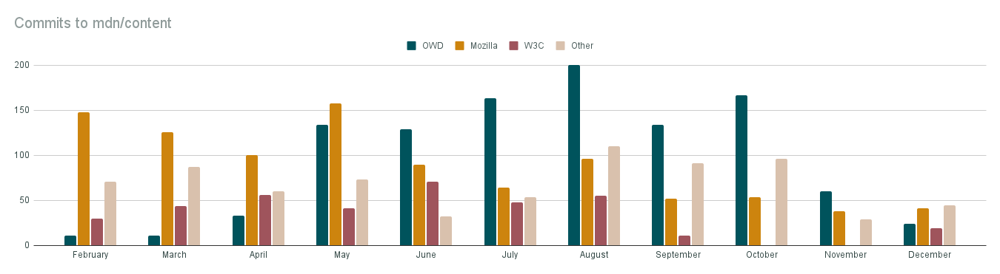
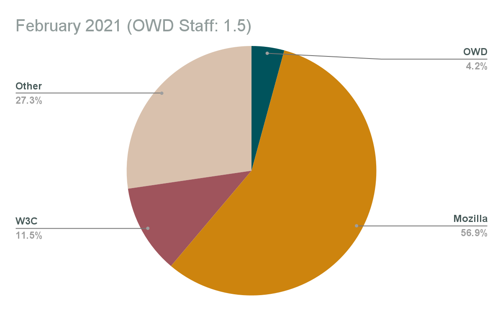
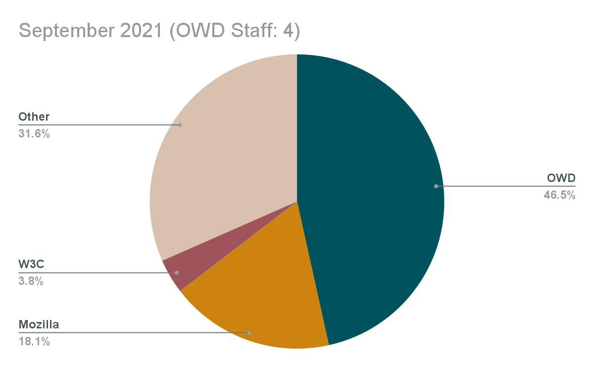
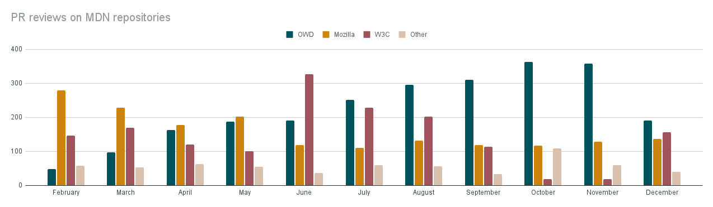
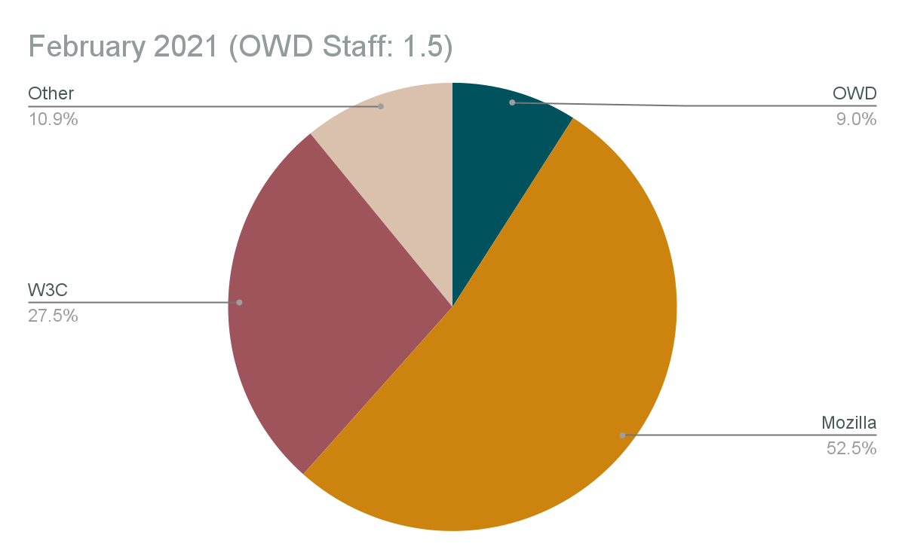
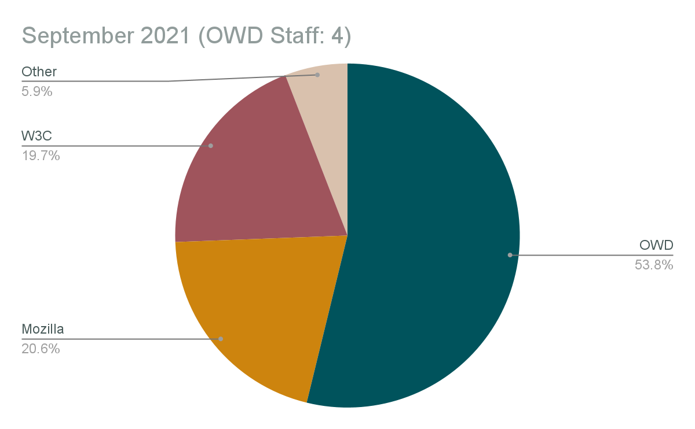
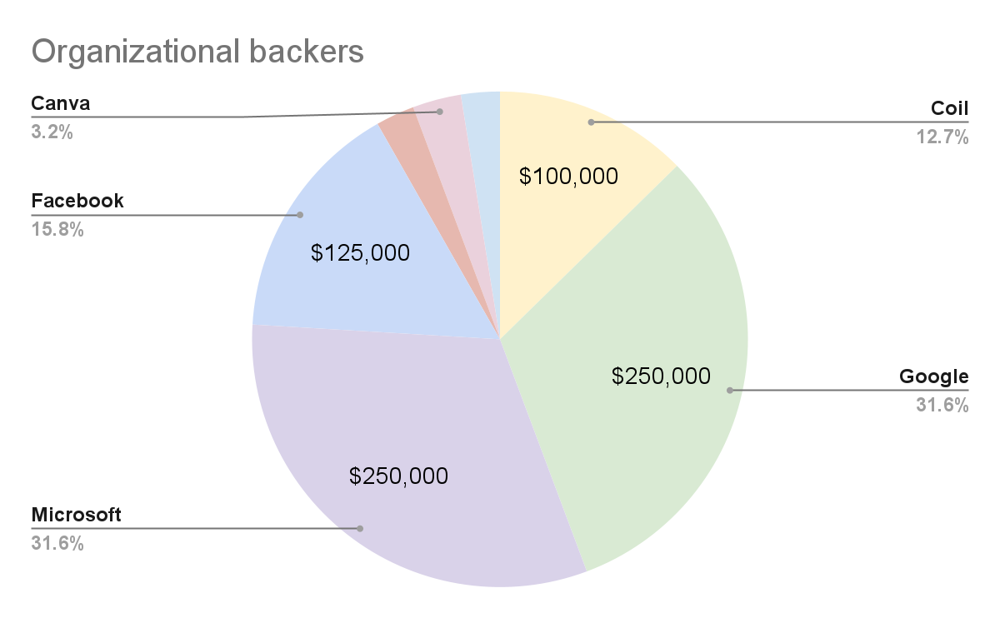

Open Web Docs Impact and Transparency Report 2021
By Florian Scholz, Will Bamberg, Jean-Yves Perrier, Estelle Weyl, Jory Burson
October 2021, updated January 2022
Executive Summary
At the end of 2021, Open Web Docs is a collective of 9 organizations and employs 4 full-time Senior Technical Writers who have extensive experience with Web standards documentation and MDN Web Docs.
The collective received $790,000 in donations from organizations and 130 people backed or donated to Open Web Docs individually.
Open Web Docs’ main focus has been contributions to MDN Web Docs, the premier platform for Web platform documentation. It is estimated that it has about 18 million monthly users and therefore OWD contributions reach the vast majority of web developers.
In September 2021, OWD staff were responsible for nearly half of the commits and more than half of the reviews to the mdn/content GitHub repository.
Open Web Docs, working with a growing set of organizations getting involved in supporting MDN Web Docs, has established a quarterly prioritization process to work on key infrastructure and content work. Projects in 2021 included: Migrating MDN content to Markdown, Collaborating with the W3C to integrate specification data into browser compatibility data (BCD) and MDN, co-leadership for the BCD project, improvements to the information architecture of API docs, making API docs more beginner friendly, and documenting WebXR.
Outset
In October 2020, Open Web Docs was created by Coil, Google, Microsoft, Samsung, the W3C, Jory Burson, and Florian Scholz, followed by the public launch on January 25, 2021. Created to ensure the long-term health of web platform documentation on critical resources like MDN Web Docs, independently of any single vendor or organization. Through full-time staff, community management, and a network of partner organizations, Open Web Docs enables these resources to better maintain and sustain documentation of core web platform technologies. Rather than create new documentation sites, Open Web Docs is committed to improving existing platforms through our contributions.
Public launch
On January 25, 2021, Open Web Docs was launched publicly with an overall very positive reaction from the Web community. The launch tweet had 473,760 impressions, and the launch blog post has over 25,000 views. There are now 147 contributors on Open Collective, the Twitter account @OpenWebDocs counts 1,915 followers and the project repository has 298 stars on GitHub. OWD also spent a long time being the #1 news on Hacker News and the story was picked up on over 20 international press sites.
Organizational growth
In 2021, the following organizations joined the Open Web Docs collective and actively participated in OWD committees.
Initial members:
- Coil
- Microsoft
- Mozilla
- Samsung Internet
- W3C
Additional members:
- Igalia (starting January 2021)
- Facebook (starting May 2021)
- JetBrains (starting July 2021)
This increases the total number of organizations participating to 9 from the initial 6 organizations. Open Web Docs provided an entry point for these organizations to get involved with Web platform documentation and contributing to MDN Web Docs. The regular exchange of knowledge and expertise has been very beneficial for all parties involved.
Facebook:
“We are honored to support the Open Web Docs initiative as it leads the way in shaping the future of inclusive, extensive and quality web documentation.” Joel Marcey, Staff Developer Advocate, Facebook
Google:
“Accessible, high-quality documentation benefits all web developers, and we’re excited to support Open Web Docs and its mission. It’s been fantastic to see the progress made in this first year.” Philip Jägenstedt, Staff Software Engineer
Microsoft:
“We are proud to support Open Web Docs to help secure sustainable, browser-agnostic, community-driven web developer documentation.” Kyle Pflug, Principal Group PM Manager, Microsoft Edge
Samsung Internet:
“We’re proud to be part of Open Web Docs to help ensure high quality cross-browser documentation for the web.“ Dan Appelquist, Head of Developer Advocacy
W3C:
“MDN provides a critical service to Web developers world-wide, and W3C is proud to have helped with getting Open Web Docs in place to provide broader and resilient community support to this mission, and elated by the progress accomplished in just a few months”. Dominique Hazael-Massieux, W3C
OWD staff team
The Open Web Docs Governing Committee successfully hired four talented Technical Writers & Developer Advocates with prior experience of Web Standards documentation and MDN Web Docs:
- Florian Scholz joined in November 2020.
- Will Bamberg joined in February 2021.
- Jean-Yves Perrier joined in August 2021.
- Estelle Weyl joined in August 2021.
Florian Scholz and Will Bamberg were hired to preserve talent from the former Mozilla MDN Content team. The public and open hiring process for positions 3 and 4 was started in April 2021 and was completed in August 2021, with Jean-Yves Perrier and Estelle Weyl joining the team.
The first quarter with a full workforce will be Q4 2021.
Diversity & Inclusion
Fostering diversity and inclusion in the tech industry is a core value for Open Web Docs. We have put in place a diversity & inclusion policy regarding what events and communities we will participate in and we have signed on to the Diversity Charter. Our intention is that our program of work, including what we put effort into and how we prioritise our activities, will also reflect this core value.
Steering committee
The Open Web Docs Steering Committee consists of two representatives from each participating organization and the OWD staff team. The group holds weekly meetings for which meeting notes are available throughout the year. The OWD Steering Committee operates in the open with vendor neutral prioritization criteria and has an open prioritization process involving all Steering Committee members on a quarterly basis.
OWD brand & public channels
Open Web Docs represents a community of Technical Writers and advocates for the Open Web. In 2021, the focus hasn’t been to build a strong succinct brand and voice. OWD amplified and supported projects like MDN Web Docs and the Open Web in general via our growing channels:
- 1,915 Twitter followers https://twitter.com/OpenWebDocs
- 298 GitHub stars https://github.com/openwebdocs/project
- 147 open collect updates subscribers https://opencollective.com/open-web-docs/updates
To keep OWD backers apprised of ongoing work, monthly worklog posts are published (archive). The OWD team also participates as invited guests on podcasts and presents at Web related conferences. The JS Party podcast is an example for this: https://changelog.com/jsparty/165.
Contributions to MDN Web Docs
Open Web Docs’ main focus has been contributions to MDN Web Docs, the premier platform for Web platform documentation. It is estimated that it has about 18 million monthly users and therefore OWD contributions reach the vast majority of web developers.
Open Web Docs is also interested in addressing web development pain points as identified by the MDN Web DNA survey and is working with browser vendors and Steering Committee members alike to identify and solve these problems. With web compatibility being the number one web developer pain point, a focus has been to contribute to mdn/browser-compat-data (“BCD”) in particular (a sub-project of MDN Web Docs).
Daniel Beck, MDN Web Docs Content Lead at Mozilla:
“OWD is an important partner in the day-to-day operational success of MDN Web Docs as an open source documentation project. Without OWD’s contributions, a range of efforts, from Markdown conversion to routine pull request reviews, would be slowed or delayed. OWD’s participation means that MDN is a richer, more dynamic project that it would be otherwise.
Above and beyond that, OWD, through its working relationship with MDN and the collegial atmosphere of the OWD steering committee, brings together a range of perspectives on the web as a developer platform. The community, effort, and documentation shared between MDN and OWD give form to Mozilla’s mission “to ensure the Internet is a global public resource, open and accessible to all.”
Day-to-day work
On a daily basis, the Open Web Docs staff team contributes to the open source repositories of the MDN Web Docs GitHub organization. The contributions can come in many forms (creating pull requests, filing issues, reviewing pull requests, participating in discussions, triaging issues) on a handful of repositories that are foundational to MDN Web Docs.
In this document, two categories of contributions are presented in more detail: Commits to mdn/content and reviews of pull requests on mdn/content.
Commits to mdn/content
The following chart summarises, for each month from February to December 2021, the number of commits to mdn/content made by every individual who made more than 10 commits in that month[1]. It assigns each individual to one of four groups:
- OWD staff
- Mozilla staff
- W3C staff
- Other (volunteers and people paid by other organizations to work on MDN)
It then sums the commits made by members of group to get an idea of that group’s contributions to mdn/content, as measured by number of commits:
| February | March | April | May | June | July | August | September | October | November | December | |
|---|---|---|---|---|---|---|---|---|---|---|---|
| OWD | 11 | 11 | 33 | 134 | 129 | 163 | 200 | 134 | 167 | 60 | 24 |
| Mozilla | 148 | 126 | 100 | 158 | 90 | 64 | 96 | 52 | 54 | 38 | 41 |
| W3C | 30 | 44 | 56 | 41 | 71 | 48 | 55 | 11 | 0 | 0 | 19 |
| Other | 71 | 87 | 60 | 73 | 32 | 54 | 110 | 91 | 96 | 29 | 45 |
  
Mozilla's lower activity is due to a change of staff, with a position that took several months to backfill; in parallel, Open Web Docs was building its workforce, compensating for it, illustrating the resilience that OWD aims to provide to the ecosystem.
Pull request reviews & supporting MDN’s move to GitHub
Until 2020, MDN was a Wiki which anyone could edit without any review. This made it very hard to maintain the quality of the documentation, but also meant external contributions were not blocked by getting reviews from maintainers.
In 2020, MDN content moved into the mdn/content GitHub repo, meaning that all contributions would be in the form of pull requests needing manual review before merging. One of the main concerns around this was: would the PR review workload be sustainable for MDN’s maintainers?
To keep MDN open and enable community contributions it’s essential to be responsive to pull requests, so reviewing and merging pull requests became a critical part of OWD’s work, and a careful review of these pull requests is essential to preserving MDN’s quality.
A year in from the GitHub move we can say that MDN has successfully and sustainably managed the PR review backlog.
- The number of PRs open at any given time has fluctuated between about 40-70 over the course of the year.
- Using the GitHub API we can see that in the second half of 2021, 3061 PRs were merged to MDN content (in total, not only by OWD staff), an average 16.6/day.
- This means MDN’s PR backlog represents about 3-5 days’ worth of pull requests.
How much has OWD contributed to this? The mdn/content PR review team can be seen as comprising four groups:
- OWD staff
- Mozilla staff
- W3C staff
- Other (volunteers or people paid by other organizations to work on MDN)
Since the start of the year, the number of PR reviews made by each group, per month, is as follows:
| February | March | April | May | June | July | August | September | October | November | December | |
|---|---|---|---|---|---|---|---|---|---|---|---|
| OWD | 48 | 98 | 163 | 187 | 190 | 252 | 296 | 311 | 363 | 358 | 190 |
| Mozilla | 279 | 228 | 177 | 202 | 118 | 111 | 132 | 119 | 117 | 128 | 136 |
| W3C | 146 | 170 | 120 | 101 | 326 | 228 | 203 | 114 | 18 | 18 | 156 |
| Other | 58 | 53 | 63 | 54 | 36 | 60 | 57 | 34 | 109 | 59 | 40 |
  
Projects
In addition to the day-to-day contributions to MDN Web Docs, Open Web Docs works with its Steering Committee to identify and invest in more substantive quarterly projects to address structural needs or important gaps in the documentation coverage. In 2021, this meant leading major content infrastructure and writing projects.
Completed projects
OWD completed the following major projects in 2021.
Converting MDN content to Markdown
In Q2 and Q3 Open Web Docs led a project to switch the authoring format for mdn/content from HTML to GitHub-Flavored Markdown.
HTML is a great language for Web pages but a difficult format for writing or reviewing documentation. Switching to a more readable format is essential for MDN's long-term sustainability. OWD led this major infrastructure project, probably the biggest change to MDN content in its history. The OWD staff:
- led a collaborative process to design a Markdown-based authoring format expressive enough to reflect the needs specific to MDN,
- worked with Mozilla's MDN engineering team to implement the changes in the platform to support Markdown,
- updated thousands of pages to simplify the markup and make it Markdown-compatible.
In October we finished converting MDN pages to Markdown, with the exception of a few pages which we intend to migrate off MDN in the near future.
We think this project has made it very much easier to write MDN documentation, both for experienced writing staff and for volunteers.
Integrating W3C data into MDN and BCD
Open Web Docs drives the inclusion of data into documentation, creating and enhancing existing data, and making such data accessible outside of MDN’s content. Work in this field has been done in close collaboration with the W3C, a provider of Web platform data. Other organizations have provided feedback into this process as well as data about the Web platform is of interest to browser vendors, developer tooling products, and others alike.
Throughout the year, and together with the W3C, Open Web Docs worked on updating MDN Web Docs’ Specification sections. MDN reference pages use this section to link to the relevant specifications for a Web platform feature. Unfortunately, these sections were outdated most of the time and not machine readable. The manually maintained HTML tables were also getting in the way of the MDN’s conversion to Markdown.
Thanks to the data from w3c/browser-specs and adding spec_urls to the browser-compat-data project, MDN’s specification links are now validated and up-to-date. A renderer was added to Yari (MDN’s backend) allowing for future enhancements to all Specification sections at once in the future.
- https://github.com/openwebdocs/project/issues/24
Open Web Docs has also started to investigate integrating and working with additional data for documentation using the w3c/webref project and working with WebIDL files. Long term, Open Web Docs envisions MDN as a provider of structured content.
MDN browser-compat-data (BCD) contributions
Throughout 2021, Florian Scholz continued to act as a co-owner of the mdn/browser-compat-data project and helped Daniel Beck (Mozilla) run the project that powers the compatibility tables on MDN and caniuse.com. Owning this open source project means helping with making strategic decisions, managing releases, and enabling the project to its full potential.
Major contributions to BCD in 2021 project included:
- Helping with PR reviews on a day-to-day basis.
- Giving input and contributing to infrastructure, schema, and governance questions.
- Adopting semver and releasing BCD 3.0.0
- Introducing spec_urls
- Finding a solution to represent compat data for “mixins”
- Adding “preview” browsers and releasing BCD 4.0.0
Fixing mixins
"Mixins", in MDN's Web API documentation, represent interfaces that are
not themselves instantiable, but are inherited by multiple interfaces that are
instantiable. For example, the WindowOrWorkerGlobalScope mixin contains
properties that are available in both the Window and the Worker interface.
Since mixins are not instantiable and in some cases represent internal implementation choices, they are confusing to users and should not be surfaced in MDN's documentation.
Although in theory mixins avoid duplication, in practice the implementation of a mixin in a given interface should have its own documentation anyway (for example, code samples should use the concrete interface).
This project eliminated mixins by separating out the properties they listed and documenting these properties in the concrete inheriting interfaces.
- https://github.com/openwebdocs/project/issues/23
Beginner friendly documentation: syntax boxes
To make documentation easier to understand and more welcoming to new and aspiring web developers and designers world-wide, Open Web Docs continuously investigates how to make content more accessible to beginners.
In Q2 2021, Open Web Docs worked on a project to make MDN reference pages more readable and easier to understand by beginners by simplifying MDN’s syntax sections. This change affected all of the JavaScript and Web APIs pages.
- https://github.com/openwebdocs/project/issues/26
Open Web Docs aims to further simplify the MDN reference pages overall, making them useful to a beginner audience and offering a benefit to reading specifications that are targeted at implementers and industry professionals.
Documenting WebXR on MDN
WebXR is a group of standards which are used together to support rendering 3D scenes to hardware designed for presenting virtual worlds (virtual reality, or VR), and for adding graphical imagery to the real world, (augmented reality, or AR). In Q3 2021, the Open Web Docs Steering Committee voted this topic as impactful for the web community and documentation work for features from 10 WebXR specifications got worked on.
As part of this effort:
- 131 new MDN reference pages were added.
- 78 pull requests were submitted to MDN.
- MDN WebXR docs have been converted from HTML to Markdown.
- Community feedback on WebXR docs and guide material needs has been collected.
Current projects
OWD staff are currently working on the following projects, all of which we expect to finish in the first or second quarter of 2022:
ARIA documentation
Writing complete documentation for ARIA roles and attributes.
ARIA is an important part of Web accessibility, and MDN's ARIA reference documentation is currently patchy and very out of date. This project will add any missing pages and update the existing ones.
- https://github.com/mdn/content/blob/main/rfcs/aria-roles.md
- https://github.com/openwebdocs/project/issues/65
Updating DOM guides and reference
The DOM is a fundamental part of the web that all developer have to understand. MDN's DOM reference documentation is badly out of date and in many cases not coherent.
This project will assess which updates are needed and make them.
- https://github.com/openwebdocs/project/issues/50
- https://github.com/mdn/content/issues/9740
Modernizing the JavaScript Learning Area
The Learning Area on MDN is the place we expect new developers to start to learn web development. The JavaScript section has not been systematically updated since it was created in around 2016, and in many cases does not recommend modern development practices.
This project will assess the updates needed across the JavaScript Learning Area, and apply them.
- https://github.com/mdn/content/blob/main/rfcs/modernize-learn-js.md
Documenting events and representing them in BCD
Events again are one of the fundamental aspects of web development, and the way MDN documents events is confusing. One of the main problems is that currently each event tends to be documented across two different pages:
- a page for the "event handler property" like
onclick - a page for the event, like
clickevent
This is confusing and doesn't properly reflect the fact that as a concept there is only a single event, with different ways to attach a listener.
In this project we will describe the proper structure and content of an MDN event reference page, and update all our event documentation accordingly. This will entail writing or rewriting several hundred pages.
- https://github.com/openwebdocs/project/issues/61
Financial report
In 2021, Open Web Docs was financially backed by organizations and individuals with the goal to pay a competitive salary to four Technical Writers. Substantial contributions from organizations were:

- Google: $250,000
- Microsoft: $250,000
- Facebook: $125,000
- Coil: $100,000
- Canva: $25,000
- Igalia: $20,0000
- JetBrains: $20,000
Open Web Docs is grateful and appreciates the generosity of the following people who substantially contributed individually:
- Paul Kinlan: $900
- Pete LePage: $900
- Daniel Ehrenberg: $500
- Michael[tm] Smith: $275
- Joel Marcey: $205
- Victor Neo: $200
- Chris Heilmann: $200
- Eric Shepherd: $150
- Andy Piper: $150
- Dominic Cooney: $130
In total, 130 individuals and 10 organizations contributed $800,842.54.
We work with a partner, Velocity Global, to process locally compliant payroll. More detail on Open Web Docs’ finances may be found on our Open Collective page.
Appendix on mdn/content metrics
This appendix describes how we calculated the metrics for OWD contributions to the mdn/content repository. It’s included here in the interest of transparency and as an invitation to check the data.
We showed two metrics:
- Number of commits by OWD staff and by other contributors
- Number of pull request reviews by OWD staff and by other contributors
The data to back up the metrics is in the OWD metrics spreadsheet.
Number of commits
To get these numbers we just looked at the mdn/content contributors page, filtered by months, for each month from February to December 2021:
https://github.com/mdn/content/graphs/contributors?from=2021-02-01&to=2021-02-28&type=c
https://github.com/mdn/content/graphs/contributors?from=2021-03-01&to=2021-03-31&type=c
https://github.com/mdn/content/graphs/contributors?from=2021-04-01&to=2021-04-30&type=c
https://github.com/mdn/content/graphs/contributors?from=2021-05-01&to=2021-05-31&type=c
https://github.com/mdn/content/graphs/contributors?from=2021-06-01&to=2021-06-30&type=c
https://github.com/mdn/content/graphs/contributors?from=2021-07-01&to=2021-07-31&type=c
https://github.com/mdn/content/graphs/contributors?from=2021-08-01&to=2021-08-31&type=c
https://github.com/mdn/content/graphs/contributors?from=2021-09-01&to=2021-09-30&type=c
For each month, we noted the number of commits by every contributor who made more than 10 commits. Then we grouped contributors into:
- OWD staff
- Mozilla staff
- W3C staff
- Other (volunteers and people paid by other organizations to contribute to MDN)
The process of excluding people who contributed 10 commits or fewer tends to disadvantage occasional volunteers.
Number of pull request reviews
To get these numbers we made a list of active reviewers on MDN:
https://github.com/chrisdavidmills
https://github.com/rachelandrew
https://github.com/hamishwillee
https://github.com/sideshowbarker
https://github.com/ericwbailey
For each reviewer we fetched their activity page, filtered by each month, February to December. For example:
https://github.com/Elchi3?tab=overview&from=2021-02-01&to=2021-02-28
https://github.com/Elchi3?tab=overview&from=2021-03-01&to=2021-03-31
https://github.com/Elchi3?tab=overview&from=2021-04-01&to=2021-04-30
https://github.com/Elchi3?tab=overview&from=2021-05-01&to=2021-05-31
https://github.com/Elchi3?tab=overview&from=2021-06-01&to=2021-06-30
https://github.com/Elchi3?tab=overview&from=2021-07-01&to=2021-07-31
https://github.com/Elchi3?tab=overview&from=2021-08-01&to=2021-08-31
https://github.com/Elchi3?tab=overview&from=2021-09-01&to=2021-09-30
We then noted the number of reviews on the mdn/content repository from that reviewer for that month. Then, as before, we grouped contributors into:
- OWD staff
- Mozilla staff
- W3C staff
- Other (volunteers and people paid by other organizations to contribute to MDN)
[1] Note that MDN’s policy is to squash commits, so usually 1 commit === 1 PR